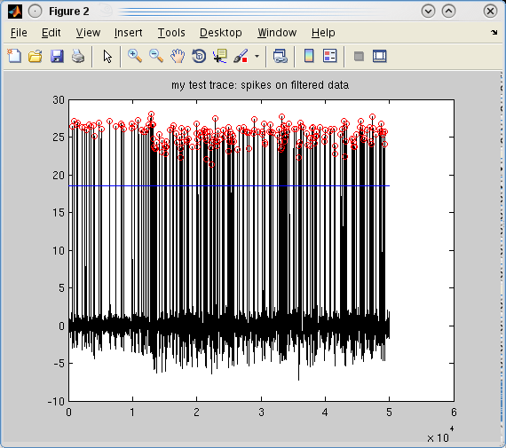
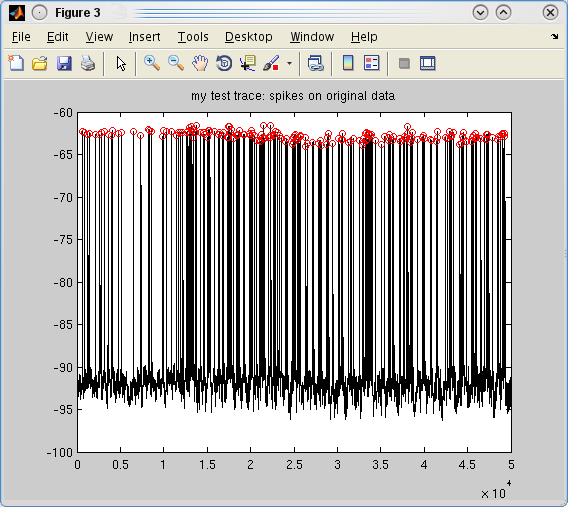
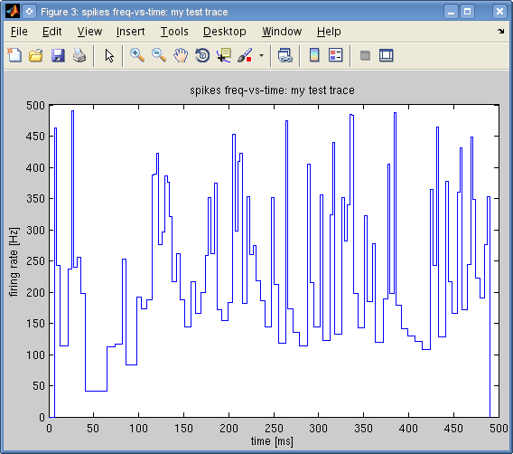

This tutorial assumes you already loaded an intracellular voltage trace and found it spikes in the previous tutorial on Loading Data.
Once you have the trace object ready and a spike_finder method selected, finding spikes is easy:
a_spikes = spikes(a_trace)
And should result in this:
spikes, id=my test trace
ans =
times: [1x187 double]
num_samples: 50000
dt: 1.0000e-04
id: 'my test trace'
The a_spikes.times element contains the spike times, in this case there are 187 of them. If you fail to find any spikes in your data, you can troubleshoot the situation by repeating the operation in verbose mode:
a_spikes = spikes(a_trace, [], 1)
Which should produce a graph with the filtered version of the data with a blue line showing the automatically selected threshold and red circles on spikes that pass this threshold:

The results from the filtered data is then translated to the real data in another figure:

If the calculated threshold did not work for you, you can change it as in the alternate spike_finder method example above by passing a struct('threshold', X) value to trace. This is the convention to set optional properties (or props) in Pandora.
Another parameter that controls finding spike times is the down threshold: how much the spike needs to go down after the peak in the filtered data. This is controlled by the optional property downThreshold in trace and it has a default value of -2.
spikes object?Once you find the spike times, you can already calculate several things and make plots. To see all possible options, you can run methods spikes, which will show all methods of the spikes object.
You can visualize the spike times with:
>> plot(a_spikes)
which should give a simple stem plot:
But you can also plot the instantaneous firing rate with:
>> plotFigure(plotFreqVsTime(a_spikes))
that gives:

The instantaneous frequency is calculated from the inverse of interspike intervals (ISIs), which can also be plotted by:
>> plotFigure(plotISIs(a_spikes))
that gives:

Now you can continue onto the next tutorial on Extracting Firing Characteristics.